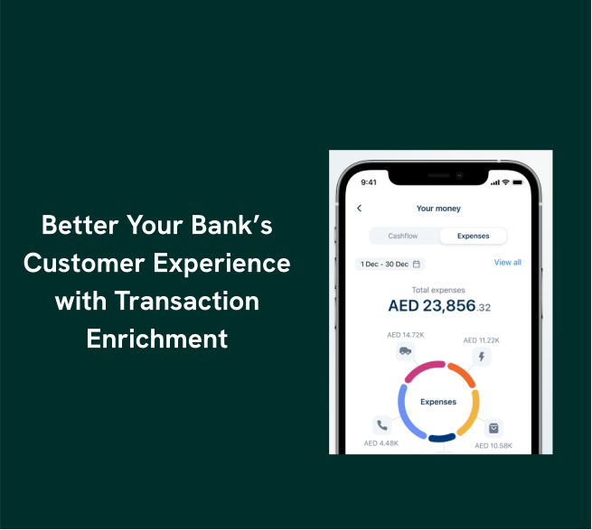

Better Your Bank’s Customer Experience with Transaction Enrichment
Transaction enrichment gives banks better client insights, creates usable data, and helps to prevent and catch fraudulent activity earlier.
Published on

Many would argue that transaction data enrichment is one of digital banking's leading innovations in the last few years, and it truly is. It has changed the way we understand banking now and has set the path for more interesting innovations in the future, like open banking. Before diving into details on how transaction enrichment helps enhance banking customer experience (CX), let's start with a basic definition.
At its core, transaction enrichment transforms raw, basic transaction data into deeply insightful and usable information. When consumers can see their account statements and understand them at a single glance through brand names and logos, that's enrichment. When digital banking teams gain access to simplified insights and advanced analytics, that's also enrichment. So, what is the financial enrichment meaning behind all this? Simply put, it refers to the process of adding substantial value to financial data in a way that enhances its significance for various banking applications.
The Need for Transaction Enrichment in Banking
Better Client Insights
This implies that if you work on a team for digital banking, you'll develop a greater comprehension of the requirements and desires of your clients. Teams in traditional banking have long been used to only knowing that a customer had made a specific amount of money on a particular day. On the other hand, transaction enrichment may demonstrate to you where, how, and perhaps even why that money was spent. These deeper levels of comprehension allow banks to provide tailored goods and services that actually fit the needs and lifestyle of the consumer. Customers believe this makes the conversation more relevant than ever by fostering an authentic engagement between them and the bank.
Enhanced Data Usability
Raw transaction data is frequently challenging to read and needs extensive analysis in order to be useful. For both the bank's backend workers and the final consumer, enriched data is far easier to use and understand. For instance, it is simpler for both parties to quickly comprehend transaction history when familiar brand names and logos are used in place of cryptic vendor numbers. Better client experiences result from speedier, more informed decision-making made possible by this streamlined information.
Fraud Detection and Prevention
By having more contextual information around each transaction, abnormal spending patterns or suspicious transactions can be flagged more effectively. Imagine a customer who generally frequents local stores suddenly making a high-value purchase overseas; transaction enrichment can help flag this as a potential fraudulent activity far more quickly than basic data. Early detection is crucial for fraud prevention, and enriched data offers that edge.
How Transaction Enrichment Works
At the heart of transaction enrichment lies a complex interplay of APIs, data sources, and algorithms, collectively contributing to what is known as financial transaction enrichment. These work cohesively to transform raw transaction details into actionable insights.
APIs, Data Sources, Algorithms
To help you understand the integration process of the engine with your data points, it's important to grasp how the interplay occurs between the available technologies. To start off, APIs serve as the connecting bridges between your banking system and external data sources. They facilitate the smooth flow of data, enabling your system to access, fetch, and integrate additional layers of information.
While this is happening, sophisticated algorithms, often leveraging machine learning and natural language processing - run in the backend through the transaction enrichment API. These algorithms process the raw data, categorize it, label it, and enrich it, turning it into something much more insightful than just a string of numbers.
Integration with Existing Banking Systems
Contrary to popular belief, transaction enrichment APIs are actually easy to integrate into existing banking infrastructures. For example, with a transaction enrichment solution provider like LuneData, you can start your journey toward enriched data with a single, simple integration that powers all your financial products. You can get started in minutes and immediately test functionalities in their sandbox environment.
This makes your development process an interconnected experience, allowing for greater flexibility and agility in deploying new customer-centric features.
By focusing on these elements, banks can massively scale their capabilities in offering personalized, data-driven services, thereby improving the overall customer experience.
The Future of Transaction Enrichment in Banking
As we look ahead, the impact of transaction enrichment on banking is bound to grow, With upcoming technologies like open banking and ever-evolving customer expectations. Here's a glimpse into what's next:
Trends and Emerging Technologies
- AI and Machine Learning: The use of AI and machine learning algorithms will continue to refine the data enrichment process, making it more precise and tailored to individual needs. We could possibly see a future with AI-driven predictive analytics to identify patterns and even recommend future financial decisions for customers.
- Blockchain: This could offer enhanced security measures, ensuring that all enriched data is not just insightful but also secure. Blockchain could help flag fraudulent activities in real-time, adding another layer of trust to the banking experience.
- Voice Recognition and NLP: Imagine a future where voice-activated banking services can pull up enriched transaction data to answer customer queries instantly. Natural Language Processing (NLP) can make this data easily understandable and relatable, taking the customer experience to the next level.
Shaping the Future of Customer Experience
- Hyper-Personalization: Transaction enrichment already allows for more personalized banking services, but the future holds the potential for even further personalization. Banks could potentially offer real-time financial advice, and contribute to the overall customer financial wellbeing.
- Proactive Services: In the end, financial institutions will evolve into financial partners that look out for your best interests rather than just being locations where your money is managed. Anticipate individualized services; for example, predictive algorithms may notify a customer in advance of an overdraft or missed payment, providing them with options based on their spending habits.
- Customer Loyalty and Retention: As services become increasingly personalized and proactive, customers will find fewer reasons to switch to competitors. High-quality, tailored experiences can lead to greater customer loyalty, reducing churn and boosting the lifetime value of each customer.